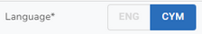
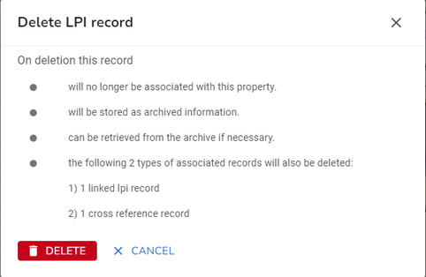

First you need to find the property that you wish to maintain. You can use the Search to search for the property by UPRN or address. Either select the property from the search results or press enter in the search and select the property from the Explorer. The details for the property are displayed in the Property form.
Add an LPI
If you wish to create an alternative name for your property then you will need to create a new LPI.
•Select to Add new LPI from one of the LPI Actions.
•Change the LPI details as required, remembering to select the correct LPI Logical Status for this record. Some of the LPI details such as Post Town and Postcode should be selected from the list provided as these are configured by an Administrator in the Lookup tables. If you are an Administrator you will also be able to add a new Lookup at this point as an Add icon is displayed if you click in the box e.g.
•If your gazetteer is Bilingual then when you also add the details for the alternate language so select the language at the top of the form e.g.
 the language for the current entry is shown in blue.
•Once you are happy, click OK to validate your entry.
•Now click Save to update the property.
Note: If your gazetteer is Bilingual then when you click Save a BLPU Cross Reference will be created linking these two LPI. The cross reference will have a Source of nnnnBG where nnnn is your Authority code.
Edit an LPI
If there is more than one LPI for the property you will see them all displayed at the top of the Property form on the Details tab.
•Select the LPI you wish to edit.
•Change the LPI details as required. Note: If your gazetteer is Bilingual and you add / change the PAO or SAO Text for one language then, the other language LPI will not be changed unless it was blank before the change.
•When you are happy, click OK to validate your changes.
•Now click Save to update the property.
Delete an LPI
If there is more than one LPI for the property you will see then all displayed at the top of the Property form on the Details tab.
•Select the LPI you wish to delete.
•Select to Delete LPI from one of the LPI Actions.
Note: If your gazetteer is Bilingual then when you select to delete an LPI it will in fact delete the matching pair i.e. both languages. The BLPU Cross Reference linking these two LPIs will also be deleted.
•You will see a confirmation dialog letting you know what will be deleted if you continue e.g.

•Click  to delete the LPI and any associated records or click CANCEL to return without deleting.
to delete the LPI and any associated records or click CANCEL to return without deleting.
•Now click Save to update the property.